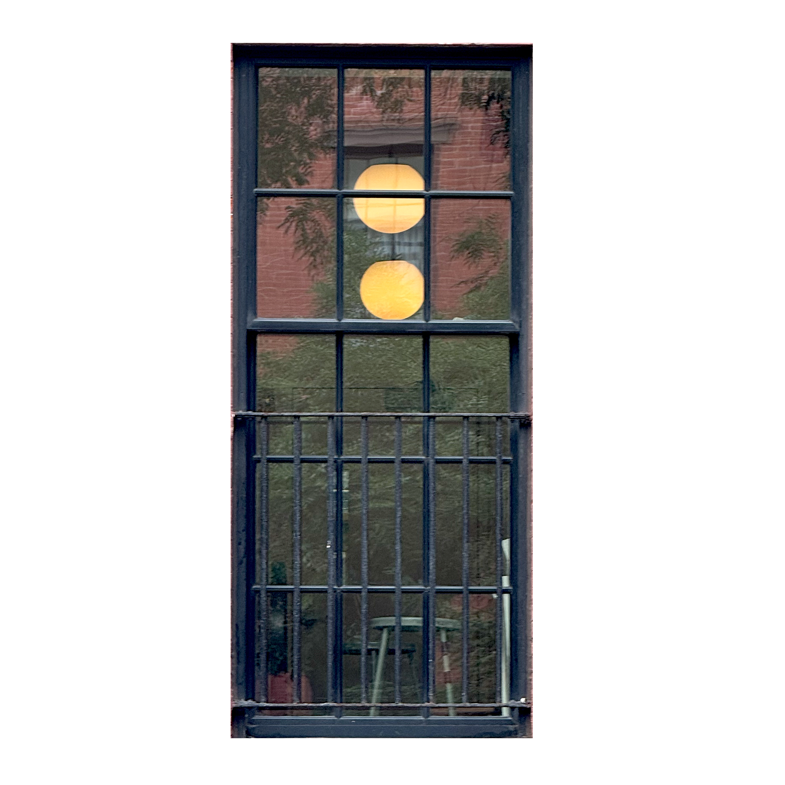

The closer you move, the less the image gives you.
THE RIGHT TO REMAIN UNSEEN.
A curtain may remain half closed. Blinds may stop the light before it reaches the room. Frosted glass breaks a body into fragments, while reflections return the street's gaze and show everything except the interior.
At night, a dark window can become almost solid. Yet traces remain: a shadow moves across fabric, a lamp appears and disappears, or a figure becomes a darker shape against the light.
The window does not completely hide the room. It controls how much of the room can be understood. Refusal is therefore not total disappearance; it is the inhabitant's ability to remain only partially available.
A CLOSED WINDOW CAN ALTER THE RHYTHM OF A CITY.
The document describes a demonstration in which a crowd stopped beneath a window. Protesters pointed upward, photographed it, and shouted toward it, while other residents opened their windows to observe. Music continued from inside, but later marches redirected away from the block.
Through Henri Lefebvre's idea of rhythm analysis, the incident shows that urban rhythms are negotiated by bodies, voices, architecture, and silence. A single window can interrupt the expected movement of a street.
David Graeber's writing on everyday political life offers another way to understand the scene. Ordinary objects - a flag, curtain, speaker, or closed pane - can carry ideological weight and turn a domestic opening into a platform for micro-political expression.
The window participates without explaining itself. It can signal, withdraw, provoke, or remain silent, changing public space while keeping the interior beyond reach.
WHAT THE WINDOW DOES NOT TELL.
A glimpse cannot explain a life. The observer may see someone sitting near the glass without knowing what brought them there. A room may look quiet, but silence cannot reveal what happened inside.
The city continuously produces incomplete images: a room visible only between two buildings, a person crossing the frame, a few objects illuminated for several seconds. The rest remains outside the image.
The eye responds by searching for patterns. A plant beside a desk becomes care, clothes become a busy morning, and a solitary figure becomes loneliness. These stories are possible, but none can be confirmed from the street.
THE UNSEEN DOES NOT DISAPPEAR.
Privacy can exist in the gap between what is revealed and what is withheld. A body may be visible without its expression being known. A room may be visible without its history becoming understandable.
The glass produces a strange closeness: the observer may stand only a few meters from another person's space while remaining completely separated from its meaning. Vision crosses the distance, but knowledge does not necessarily follow.
The absence of information is not empty space. It is a boundary that reminds the observer that visibility is not permission and that another life does not need to answer the questions produced by looking.
These fragments are traces rather than answers - brief openings into glass, light, routine, conflict, and resilience. To attend to them with care is also to accept what resists spectacle and remains unfinished.

The window gives the eye something to follow, but never enough to complete the life behind it.
THE ROOM DOES NOT NEED TO ANSWER. THE CURTAIN DOES NOT NEED TO OPEN.